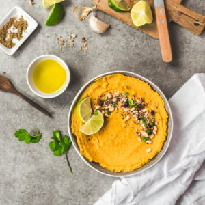

Houmous de patates douces à la noisette

Aujourd’hui je vous retrouve avec une recette d’apéro puisqu’il s’agit d’un houmous de patates douces à la noisette, idéal pour tremper quelques dips de légumes ou morceaux de pains!
Je pense qu’en lisant mon blog vous devinerez rapidement que l’on adore le houmous( en cherchant sur le blog vous trouverez un houmous de betteraves, de poivrons, le houmous classique évidemment et celui à l’avocat!). Bref on adore décliner cette recette car en plus d’être une recette saine c’est aussi avant tout une recette conviviale pour l’apéro (et pourquoi pas en entrée). Ici on a utilisé la patate douce et une crème de noisette pour cette nouvelle version (parfaite en cette saison). On a mangé une partie avec plein de petits dips et l’autre partie en sauce pour un burger (désolé je n’ai pas eu le courage de le prendre en photo mais j’en referai certainement^^). Ce qui fait tout dans une bonne recette de houmous ce sont les épices! Ici il y a du cumin mais aussi du zaatar (mélange d’épices du Moyen-Orient) qui aident à ravis nos papilles alors n’hésitez pas à adapter la quantité d’épices selon vos propres goûts :). Pour le reste de la recette rien de bien compliqué! Quelques ingrédients que l’on a presque tous dans nos placards, de l’huile d’olive, des noisettes, un mixeur et le tour est joué! Je vous laisse avec la recette de ce houmous de patates douces et je vous souhaite une bonne journée ♥
Ingrédients
- Patates douces - 200g
- Pois chiches cuits - 500g
- Tahine (crème de sésame) - 50g
- Crème de riz noisette (trouvée chez Bonnettere) - 50g
- Ail - 2 gousses
- Coriandre - 1 bouquet
- Cumin - 20càc
- Zaatar - 1 càc (facultatif)
- Citrons verts - le jus de 2 citrons
- Huile d'olive - 3 càs
- Sel, poivre
- Eau (facultatif) selon consistance désirée
- Huile d'olive
- Pignons de pins grillés
- Coriandre ciselée
- Noisettes concassées
- Zaatar ou un peu de paprika
- Citrons vert
Instructions
- Préchauffez le four à 180 °C
- Épluchez et coupez les patates douces en morceaux
- Arrosez d’un filet d’huile d’olive, de cumin, salez, et enfournez 15/20 minutes sur une plaque
- Égouttez les pois chiches et réservez.
- Mettez les pois chiches dans un mixeur ou écrasez-les avec un écrase purée
- Ajoutez le tahine suivi du jus de citron, de l'ail écrasé et de la crème de riz noisette
- Mixez
- Ajoutez les patates douces cuites, le cumin restant et le zaatar (Épicez plus ou moins selon vos propres goûts!!)
- Mixez à nouveau
- Ajoutez 3 càs d’huile d'olive et mixez à nouveau, salez et poivrez
- Vous pouvez modifier la consistance en ajoutant progressivement de l’eau ou de l’huile d’olive jusqu'à la consistance souhaitée
- Verser le houmous dans un bol et réserver au frais recouvert d'un papier aluminium jusqu'au moment de servir
- Au moment de servir, ajoutez un filet d’huile d’olive, des noisettes concassées, de la coriandre ciselée, des pignons grillés et quelques épices.
- Servir avec des dips de légumes et des galettes de mais au cumin ou au zaatar lors d'un apéro!
Les tips de la communauté
Recette avec avis partagés. Certains l'adorent et la préfèrent aux autres versions, d'autres la trouvent trop compacte malgré les ajustements.
Astuces
- Remplacer la crème riz noisette par du fromage blanc si introuvable
- Ajouter davantage d'huile pour améliorer la texture
- La texture varie considérablement selon la qualité des patates douces
Variantes suggérées
- Avec fromage blanc à la place de la crème riz noisette
Ajustements signalés
- La texture peut être trop compacte selon les patates douces utilisées, ajuster l'huile en conséquence